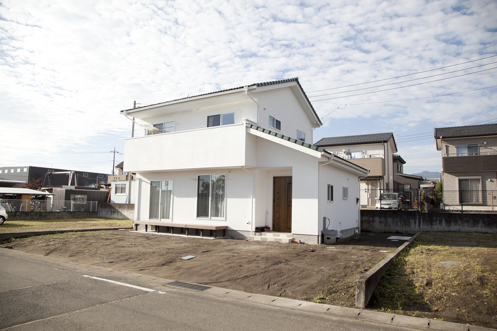
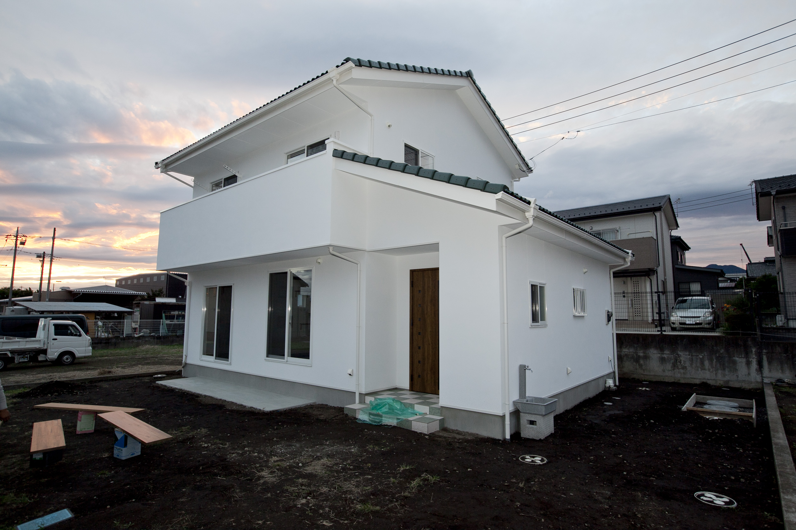
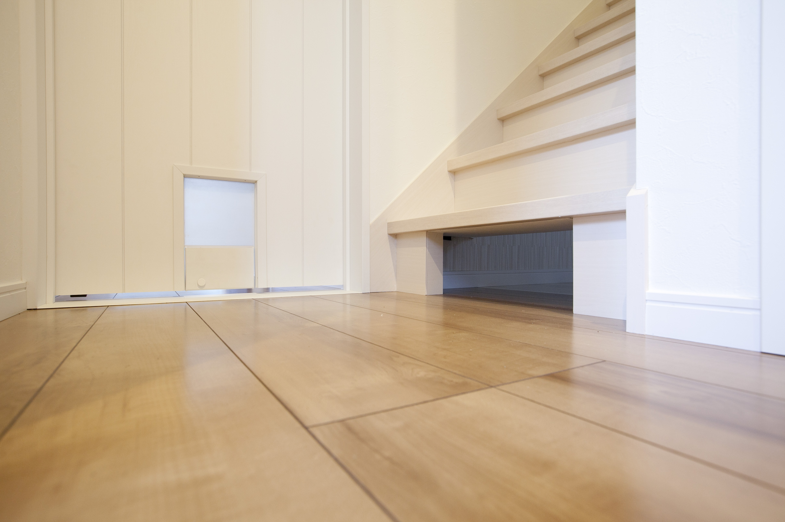
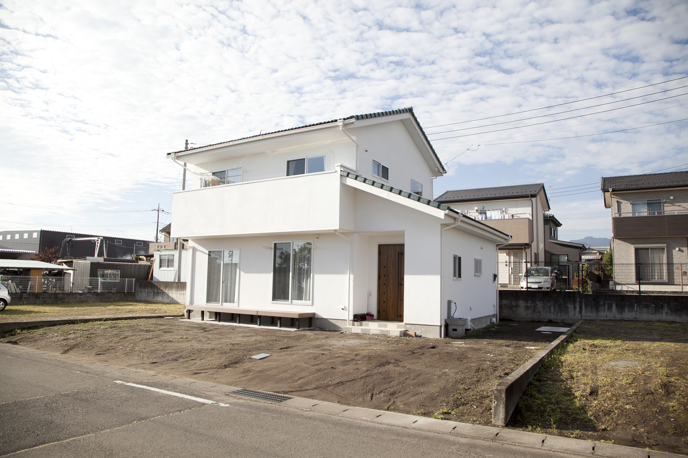
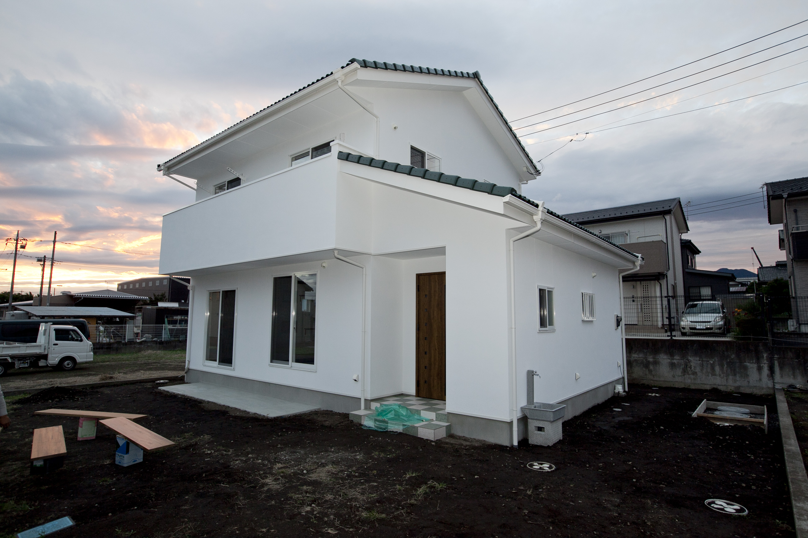
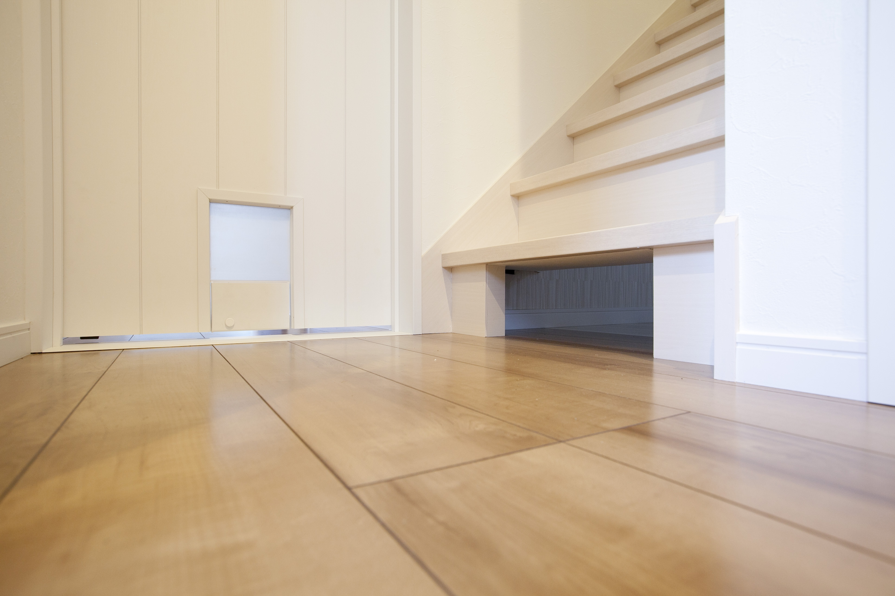
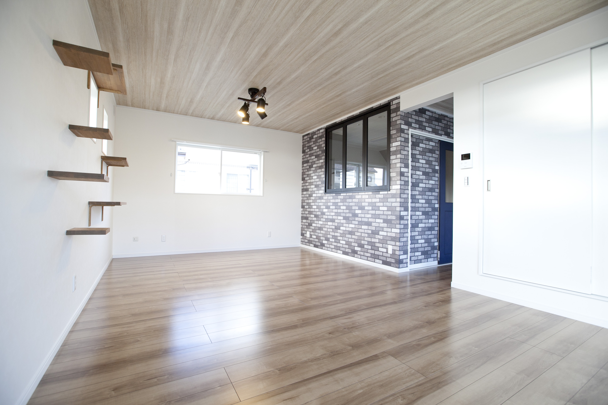
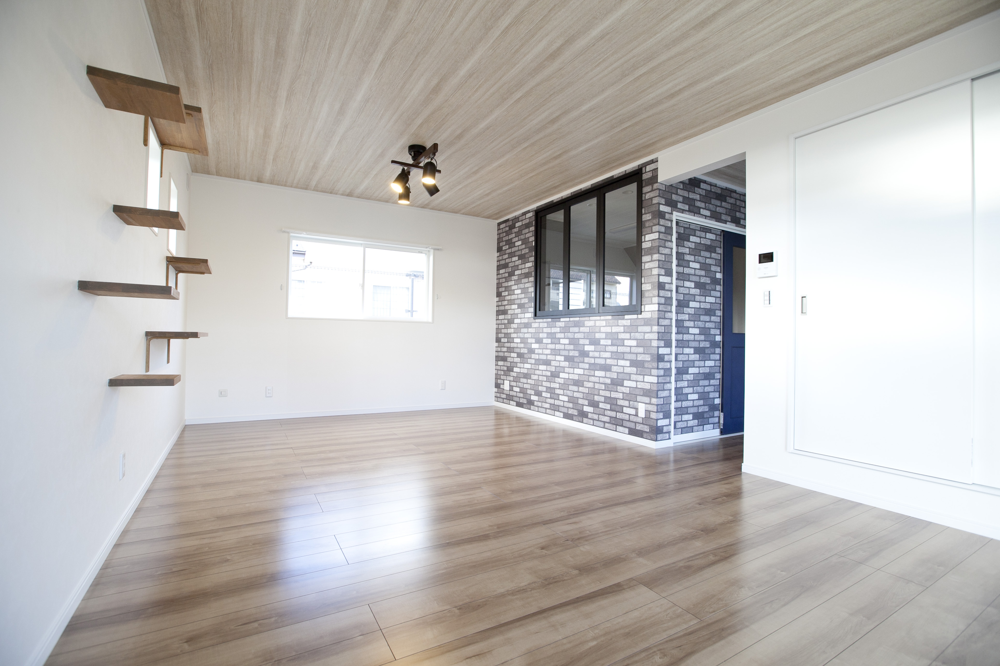

経験
昭和29年（1954）創業の歴史
高橋清吉によって創業されて70年以上が経つ高橋巧務店
その間、地元の工務店として数々の施工を行ってきました。
一般の注文住宅をはじめ、増改築、公共工事などの幅広い
実績に基づく経験でサポートいたします。
その間、地元の工務店として数々の施工を行ってきました。
一般の注文住宅をはじめ、増改築、公共工事などの幅広い
実績に基づく経験でサポートいたします。

 





 
